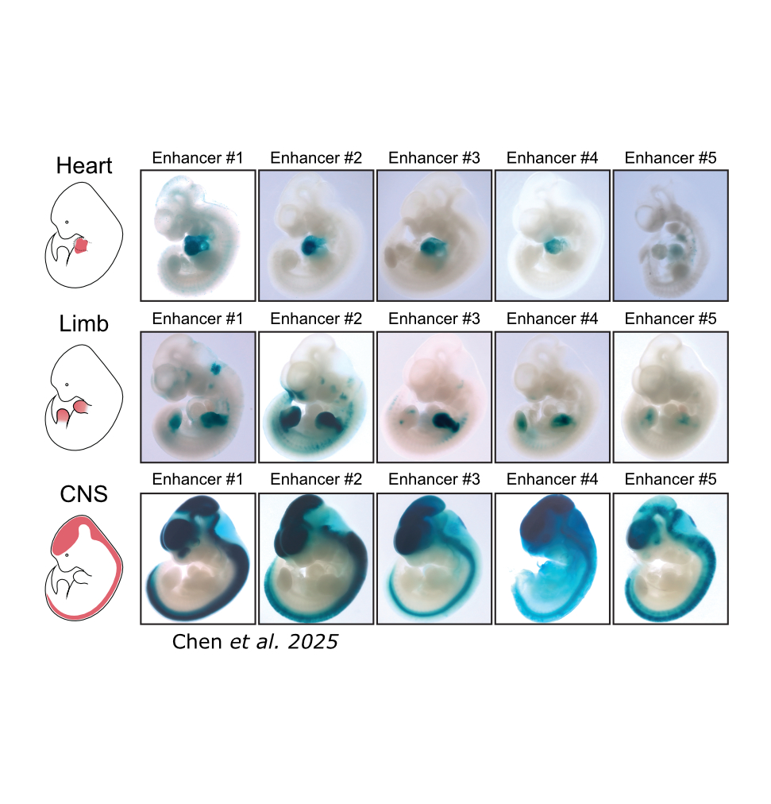
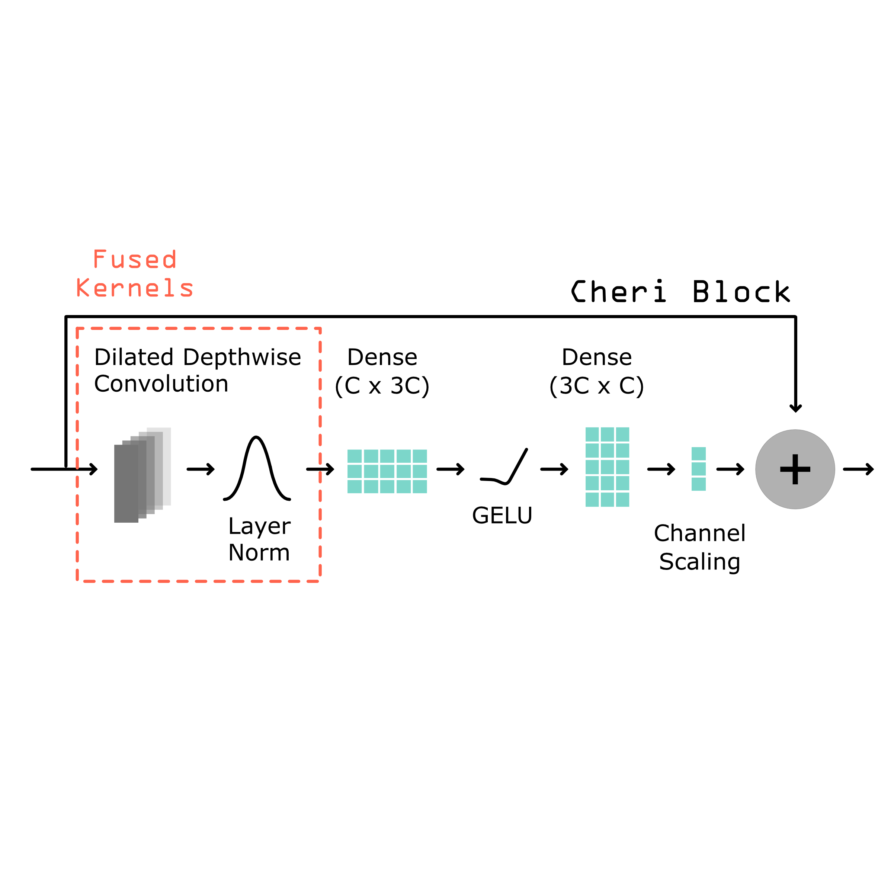
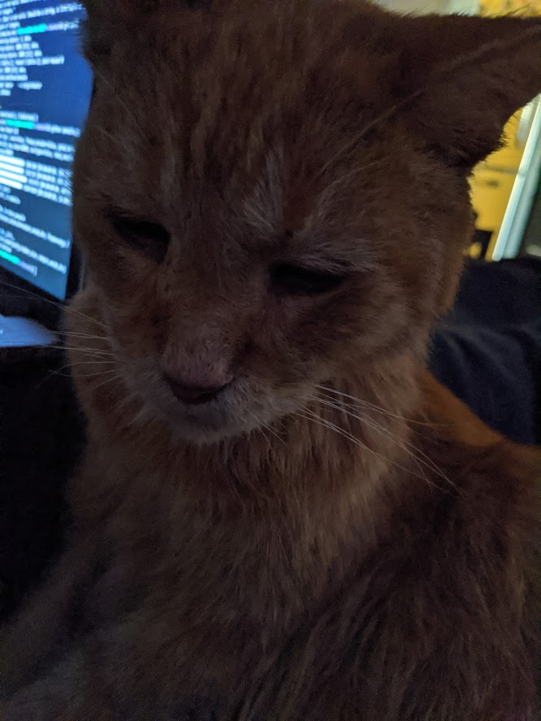

Open Positions
We are currently seeking Graduate Students, Post-doctoral Researchers and Staff Scientists.
To apply, please send your CV and a brief note (max 3 sentences) describing your background and
interest to:
In the era of AI-designed proteins, the next frontier is the precise control over when, where, and how strongly proteins are expressed in living cells and tissues.
The Programmable Genomics Laboratory (PGL) in the Department of Genomics and Computational Biology at UMass Chan Medical School is an interdisciplinary research group bridging machine learning, synthetic biology, and regulatory genomics. We develop generalizable methods for designing regulatory elements and higher-order circuits with subtle and precise properties—enabling cell type-specific expression, transcriptional dosage control, and context-dependent production. Our goal is to be able to target any cell type in any tissue, at any stage of development, for any duration, and to deliver payloads more complex than typically seen in eukaryotic genomes.
To enable genomic design with this level of precision, PGL targets the full genomic machine learning stack. This means developing algorithms for processing genomics data, developing scalable and light-weight deep learning architectures without compromising on accuracy, and developing a broad range of computational methods for rigorously evaluating the quality and robustness of these models.
Research Areas
Regulatory Element & DNA Design
We design regulatory elements with precise and subtle properties. Our current focus is on using deep learning-based predictive models to design cell type-specific enhancers and promoters, but we are looking to go further than targeting by also controlling precise transcriptional dosage in the on-target cell type, and by minimizing the size of the regulatory elements. To this end, we have developed software for simple design algorithms and Ledidi, a method for editing initial templates to achieve desired activities.
[Ledidi] [Ledidi 2]
Compact Deep Learning Architectures
In service of tackling challenging design tasks, we develop deep learning models that have fewer parameters and run faster than the current state-of-the-art without compromising on accuracy. These models will allow us to tackle more ambitious design settings where dozens, or hundreds, of cell type- or modality-specific models are needed simultaneously to control the design process. By being smaller, more models can fit in GPU memory at the same time, and by being faster, we can still perform design quickly even with that number of models.

Ecosystem Engineering
Progress in genomic machine learning has been remarkable, but is still slower than it could be because most algorithms downstream from the predictive model are implemented in a bespoke manner, or tied to a research codebase that is not optimized for general usage. To accelerate our own progress, and progress in the field, we write software with a focus on usability and adaptability so that those without our computational expertise can still make important contributions.
[Tangermeme] [Tomtom-lite]